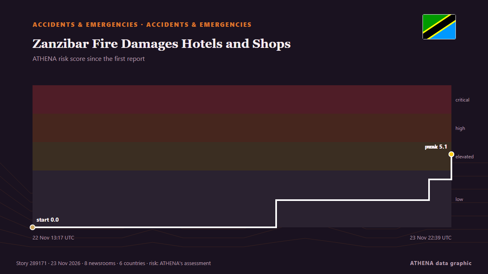

Accidents & emergencies
SponsoredPresented by  Cybernetics and Artificial Intelligence Lab Welcome to the Cybernetics and Artificial Intelligence Laboratory, established at the Department of Business Administration of the National and Kapodistrian University of Athens. The lab is headed by Professor Dimitrios Thomakos. The lab aims to do research that can be published in top venues. Our research uses tools and methods of Artificial Intelligence, and lies in the following areas: - Forecasting - Decision making - Cyber security - Finance We are always looking forward to collaborating with exceptional students!
Cybernetics and Artificial Intelligence Lab Welcome to the Cybernetics and Artificial Intelligence Laboratory, established at the Department of Business Administration of the National and Kapodistrian University of Athens. The lab is headed by Professor Dimitrios Thomakos. The lab aims to do research that can be published in top venues. Our research uses tools and methods of Artificial Intelligence, and lies in the following areas: - Forecasting - Decision making - Cyber security - Finance We are always looking forward to collaborating with exceptional students!
| 11 Nov | 0 |
|---|---|
| 12 Nov | 0 |
| 13 Nov | 0 |
| 14 Nov | 0 |
| 15 Nov | 0 |
| 16 Nov | 0 |
| 17 Nov | 0 |
| 18 Nov | 0 |
| 19 Nov | 2 |
| 20 Nov | 5 |
| 21 Nov | 7 |
| 22 Nov | 7 |
| 23 Nov | 3 |
| 24 Nov | 0 |

Zanzibar Fire Damages Hotels and Shops
More than 180 tourists evacuated after a major Zanzibar fire. from News of Bahrain
Second fire ant nest found in Sydney
An urgent warning has been issued after a second nest of deadly fire ants was found in Sydney. from The Age
Man injured in crocodile attack near Chidambaram
MIRI: A man was seriously injured after being attacked by a crocodile while using his mobile phone by a river in Kuala Baram last night. from New Straits Times
24 dead in Nigeria boat accident
Vessel carrying mourners to a funeral capsizes in Bayelsa State as search and rescue operations continue. from News of Bahrain
7 killed as truck overturns onto parked vehicle in Pakistan's Punjab
Nine people were on board the mini truck, rescue officials said. from The Business Standard (Bangladesh) (working feed)
Bayelsa Boat Mishap: Death toll rises to 29
…Tinubu approves N250m for victims’ families, directs NDDC to procure boats …FG backs probe of incident …Diri makes case for senatorial roads By Samuel Oyadongha, Yenagoa The death toll from last… from Vanguard
Titanic survivors diamond ring sells for £150,000 at auction
LONDON: A diamond ring worn by one of the most famous survivors of the sinking of the Titanic has sold for £150,000 (US$165,000) at auction, PA Media/dpa reported. from New Straits Times
3 killed, one injured in a shooting in US State of Ohio
Gunfire results in death of 19-year-old man, 45-year-old man – the father of the baby’s mother – and 17-year-old girl. from Anadolu Agency (English)
Bezzecchi wins Portuguese MotoGP sprint, Marc Marquez crashes
Raul Fernandez and Alex Marquez finished second and third respectively behind Aprilia's Marco Bezzecchi, who claimed his first sprint victory of the season. from Free Malaysia Today
Police investigating whether Titans’ Jaylen Harrell assaulted driver before Florida crash
The Tennessee Titans say defensive end Jaylen Harrell has been hospitalized in Florida after being involved in a serious car crash. from The Independent
Family says woman, 19, killed in crash outside A&E is 'gone far too soon' in touching tribute
Charlotte 'Chaz' Lipscombe passed away at the scene after a collission with a BMW. from Irish Mirror
Ferrari chief frustrated with latest Leclerc-Hamilton collision
Ferrari principal Fred Vasseur said Charles Leclerc’s collision with teammate Lewis Hamilton at the Las Vegas Grand Prix on Saturday was “completely unacceptable”. from Cyprus Mail
Fire at power station in Iraq's Basra kills at least 4, injures 35
Iraq’s Electricity Ministry said the incident involved a gas pipeline supplying the power station. from The Straits Times
As e-bike battery fires mount, New York weighs tougher restrictions
Fires caused by lithium-ion batteries have surged 70% from a year earlier. from The Straits Times
Man convicted of starting deadly 2025 Palisades blaze in Los Angeles
The Palisades fire killed 12 people as it incinerated entire neighbourhoods in Los Angeles and Malibu. from The Irish News (Belfast)
Three Salvadoran Soldiers Die in Haiti Explosives Accident
Three Salvadoran soldiers died after an accidental explosion at a camp in Haiti, the first deaths of Bukele's deployment. from The Tico Times
England will need fire and pride to beat New Zealand – Steve Borthwick
The All Blacks, who are reeling from their shock defeat to Wales, will provide a valuable gauge of England’s progress. from The Irish News (Belfast)
APC campaign finance director dies in road crash
The News Agency of Nigeria reports that Festus Onuh, the chairman of Ferotex Construction Company Ltd, died in an accident on Thursday while travelling along Port Harcourt-Enugu Expressway to attend… from Premium Times
‘Joy Bangla’ now a slogan for fleeing: Humaiun Kobir
Confirming the incident, Afzal Hossain, additional deputy commissioner (media) of Sylhet Metropolitan Police (SMP), said an attempt was made to set fire to the front gate at some point in the early… from The Business Standard (Bangladesh) (working feed)